Software
Engineering
✦ Vienna, Austria · April 2026
Online week
Deliverables
- LASR Cards
- Functional Requirements
- Component Diagram
Why
We were assigned the LASR card exercise on day one as a way to align on quality attributes before making any architecture decisions. I had no idea what LASR cards were going in, so it was all new to me.
How
We went through the cards as a group, debating each one against our project context, the Humber Arboretum dashboard and field app. I contributed by thinking along and arguing for what made sense from a user perspective.
What
We landed on Usability, Functional Suitability, Scalability, Cost Efficiency, and Compatibility as our top 5:
- Usability — we have two very different user groups, sustainability staff and regular visitors. If the system isn't easy to use neither group will actually use it.
- Functional Suitability — the system needs to actually do what it promises. For an ecological monitoring tool that feeds into ESG reports the data and features need to be correct.
- Scalability — the Humber Office mentioned they want the system to grow and eventually be maintained by their own staff. So it can't be something overly complex that only a developer team can touch.
- Cost Efficiency — they also flagged low cost as a requirement. University sustainability office, not a startup with funding. The system needs to be affordable to run and scale.
- Compatibility — the dashboard needs to work on desktop, the field app on mobile, and the system may need to connect with tools the Humber Office already uses.
Things like Reliability and Safety ended up lower, not because they don't matter, but they weren't the priority for our context.
After picking our top 5 we didn't just leave them as card titles either. We deepened each one into a proper definition with concrete measurements and priorities. So Usability for example became something specific like the interface needing to meet WCAG 2.1 standards and users being able to onboard within 2 minutes. The full quality attribute breakdown is included as a supporting document.
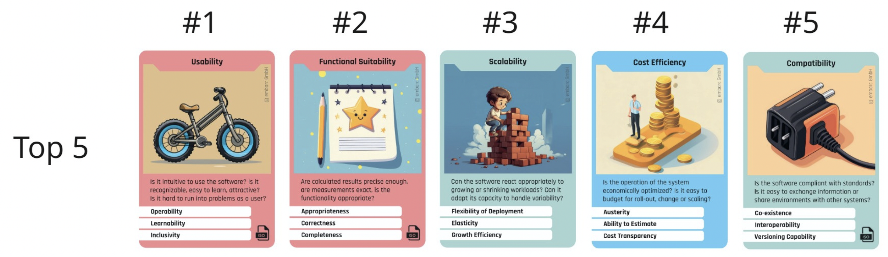
So What
The architecture lecture that followed went mostly over my head, but the baseline I took from it was that it's kind of like design, there's a structure to the decisions you make, it's just written in a language I don't speak yet. And honestly? I might never speak it. I'm just a girl. But understanding that software architecture follows similar patterns of intentional decision making as design is enough for me to keep up and contribute where I'm capable of this module.
Why
This was part of our first week assignment. Before we could build anything, I needed to understand how our users translated into actual system requirements. The personas we worked on together during HCD were already there, so now it was about figuring out what the system actually needed to do for each of them.
How
The team worked through the requirements together but the developers took the lead since they had the knowledge to know what was technically feasible. I was there during the decision making and contributed where I could, mostly from a user perspective since that is my domain.
What
We ended up with three functional requirements linked directly to our personas. The Busy Visitor needed an interactive map of the arboretum with labelled landscape elements filterable by category. The Sustainability Pro needed a real-time metrics dashboard with export and filtering options. The Nature Visitor needed an observation logger where they could submit geo-tagged observations including species, photos and notes that feed into the ecological database.
So What
What I found interesting was seeing how directly the personas translated into features. It connected the HCD work we did in Eindhoven to the software decisions being made here in Vienna, which made it feel less like two separate worlds.
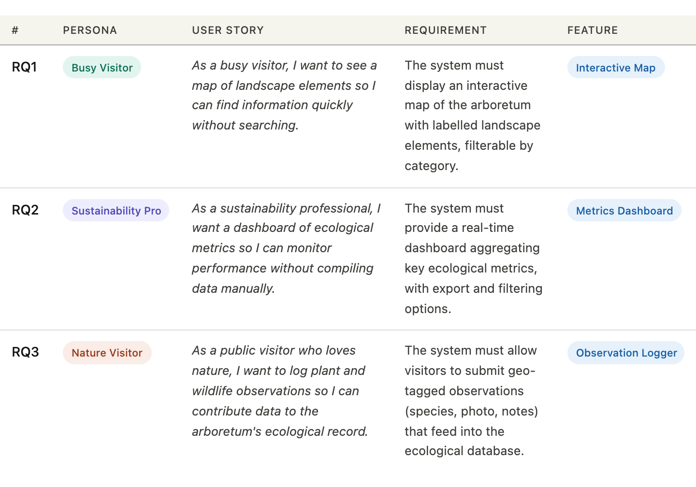
Why
After aligning on our quality attributes, the next step was figuring out how the system would actually be structured. The developers on the team took the lead on this one (again).
How
The developers put together a component diagram showing how all the pieces of our system connect. I contributed by following along and agreeing on the direction, honestly this was more their territory than mine.
What
The diagram shows two frontends, the HOoS Dashboard as a web app and the Mobile App, both connecting to a backend RESTful service via REST API and HTTPS. The backend, likely Supabase, handles three databases: one for entries, one for user data, and one for image storage. There is also a separate server that runs AI models for anomaly classification. The team went with REST API and Supabase specifically because some members had worked with them before and it was the most straightforward option for the team.
So What
Looking at it now I can see it is a client server, component based setup. Not a full monolith, not microservices, somewhere in between which the lecture said is pretty normal for real systems.
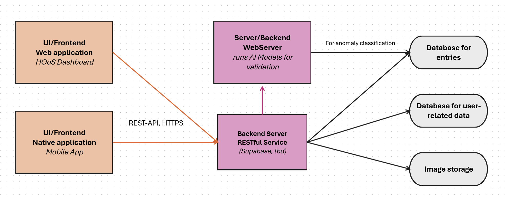
Week 3
Deliverables
- Setup and First Commits
- ORM – Object Relational Mapping
Why
The software module officially moved from planning to building this week. Which meant I had to actually get the project running on my laptop. That sounds simple. It was not. Before I could contribute any code I needed to get the full development environment set up locally. Every team member had to follow the same setup process so we were all running the same thing.
How
Armend and Adrian sat with me and helped me get everything running. I followed the RUNNING.md guide Adrian had written but honestly without them next to me I would not have gotten through it. The setup involved installing Node.js, Docker Desktop, Expo Go, ngrok, cloning the repo, installing dependencies, setting up environment variables and running the right make commands just to get the app to show up on my phone. On a university network like eduroam it was even more complicated because you need tunnels to connect everything. It took a while but we got there.
What
Once the setup was done I made my first commits to the codebase. That week I worked on:
- Adding the Terra logo and brand icon as SVG and PNG assets to the project
- Adding the leaf icon as a separate asset
- Building the navbar on the map screen in TypeScript and TSX
These were my first real commits to a shared codebase with a proper Git workflow. Small steps but they felt significant.
So What
Getting set up was genuinely one of the hardest parts of this module for me. Not because the instructions were bad but because every step assumed a level of technical knowledge I did not have yet. Having Armend and Adrian there made it possible.
The errors I ran into along the setup (there were many 😭) and the SOS help I got from Adrian and Armend to finally get the app running on my phone
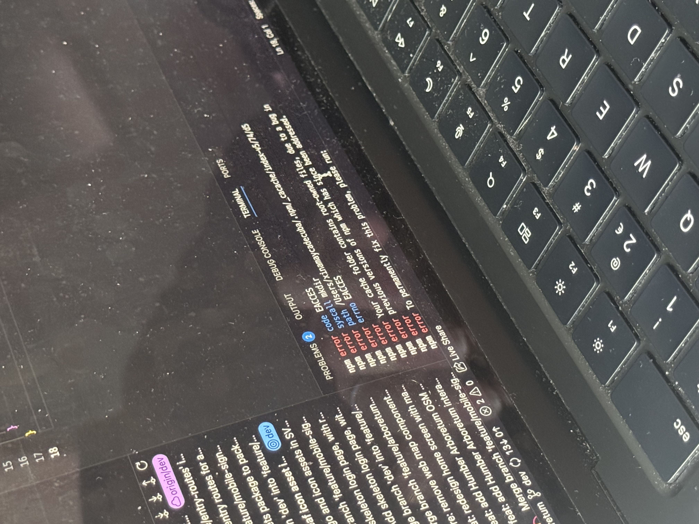
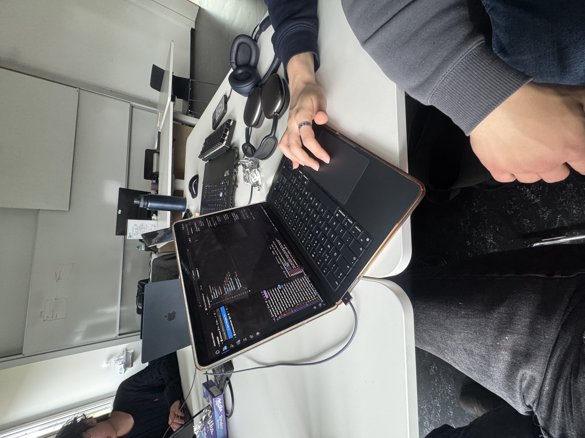
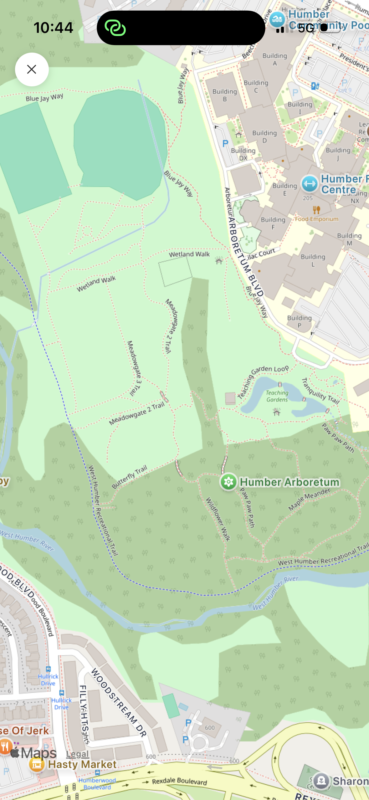
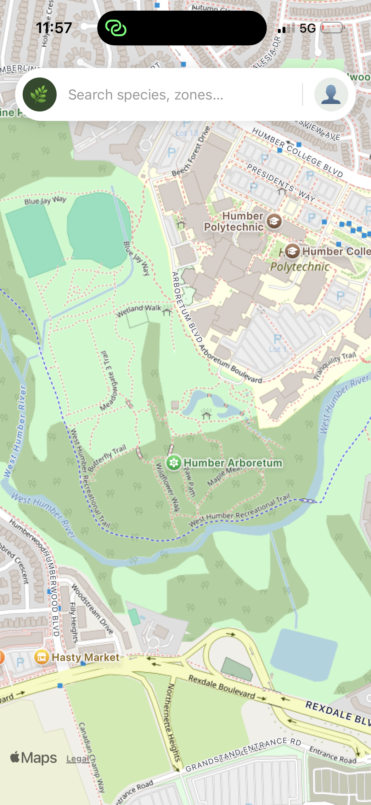
App running and Commit
My first commit and the navbar I added written in TypeScript/TSX

Why
For the Software Engineering module I had to learn how to work with databases in C#. Instead of writing raw SQL, we use an ORM to interact with the database using regular code.
How
I used Entity Framework Core with an in memory database. I created a Purchase class with properties like ProductName and Price, and a DbContext class called bobsdatabase that acts as the connection to the database. I added three purchases, saved them, and printed them to the console.
What
ORM stands for Object Relational Mapping. It maps your code objects (classes) to database tables. So instead of writing SQL like SELECT * FROM Purchases, you just write db.Purchases.ToList(). My teacher compared it to a written Excel sheet. Each table is a sheet, each row is an entry, each column is a property.
So
I got my first C# database program running and could see the data printed in the console. What is exciting is that going from knowing nothing about this, I can at least semi understand what the file is doing now. Next I will be manipulating the data by adding, updating and deleting entries to complete the full CRUD task.
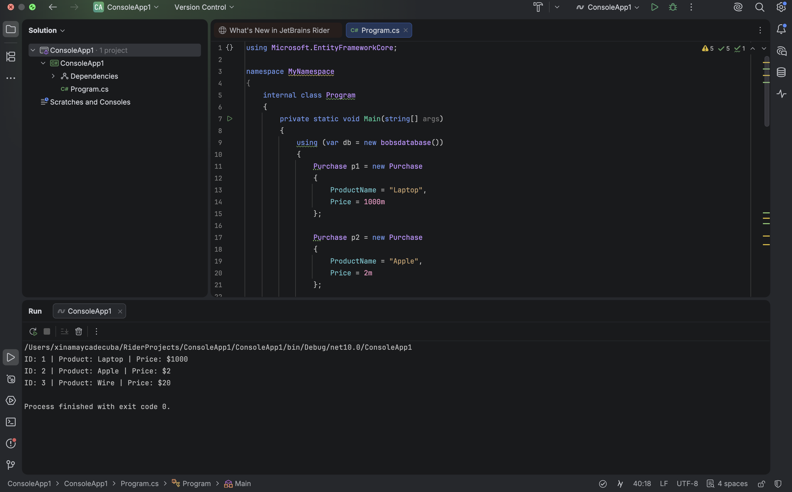
Reflection
Topics
- Personal Reflection
- Intercultural Development
Individualism vs Collectivism
Coming into Vienna I already had a better idea of how our team worked and where things could go wrong. After Eindhoven I reflected on it properly using Hofstede's dimensions and I went in this time actually wanting to do things differently. And I did.
Same team, same mix of backgrounds but this time we already knew each other which made a huge difference. The cold independent working from Eindhoven was mostly gone. It felt more like an actual team. We also actually used our Jira board properly this module which sounds small but it genuinely kept everyone on track and tasks got finished. I also showed up more, was less late and spoke up about what I wanted to work on instead of just going with whatever was decided. That changed a lot for me personally.
Power Distance
Adrian stepped up as our technical lead this module and honestly it worked. Every decision was made by the right person with the right background for it. Technical decisions went to the developers, design decisions came to me and people actually listened. I did not feel intimidated or overpowered this time around. When I had an opinion especially on the design side, it was heard and we ended up going with it. That made me feel a lot more included and confident in my role.
Uncertainty Avoidance
In Eindhoven I would sit with confusion and avoid asking for help until things boiled over. This time I just asked. Setting up the project was painful and I needed help multiple times but I asked every time instead of suffering in silence. When something was unclear I said so. It sounds simple but for me it was a real shift and it made the whole experience less stressful.
Motivation towards Achievement and Success
The team still makes comments like "we are the best group" which used to get on my nerves a little. But honestly this time it is kind of true so I let it slide. We delivered something real, something we were all proud of, and Adrian actually thanked us for our efforts at the end. That felt genuinely earned and not just performative. That hit different.
What I learned
The biggest thing I took away from Vienna compared to Eindhoven is that how you show up changes everything. I was more present, voiced myself more and was overall more connected with my team. That made us work in a better collaboration than the previous module and honestly the results speak for themselves.
This module got off to a rough start. Coming straight out of the design module I did not feel connected or part of the team right away. On top of that, adjusting to Vienna as a city was surprisingly harder than I expected.
An Austrian told me very early on that Austrian people are not so kind. I did some digging and found enough to understand what she meant. Vienna is famously described as one of the most livable and at the same time one of the most unfriendly cities in the world. Coming from Aruba where everyone greets you like a family member, it felt like being thrown to the wolves. I had moments with other Austrians where even they acknowledged the performative posh side of their own culture. I did not enjoy the city as much as I thought I would. But I took away things I would not have found elsewhere. Starting with finding my future coach for my sport outside of my studies.
I hit the gym often during my stay and ended up meeting an Olympic weightlifting coach named Klaus. Being in that gym, surrounded by people working toward the same goals, I felt connected in a way I do not always feel at my gym back in Eindhoven. I felt like I belonged. No matter where everyone came from or what their background was, on the lifting platform everyone is after the same thing and we push each other. That was unexpected and I am genuinely grateful for it. I am planning to stay in contact with Klaus and continue working with him going forward. It taught me that it matters who you surround yourself with.
That lesson carried into the project too. Working with students from different cultural backgrounds, even though we all came from different places and different disciplines, we were all there to do our best on this project together. More so than the previous module, we connected as a team and we managed to deliver a product we were all proud of. That same energy of showing up and pushing each other forward made the difference.
Being able to build a completely new brand and design for Terra and then seeing it on the dashboard in all its glory, working cohesively as one product, has been one of the highlights of this module. And being able to contribute not just in design but also in code has made a real difference. I also did better this module in showing up for my team. I was more present, less late than last module, and I spoke up more about what I wanted to work on. By the end of the module my connection with the team had grown a lot, especially with Adrian who I had clashed with early on. He actually thanked us for our efforts because the results spoke for themselves. That meant a lot to me. I felt proud to be part of healing whatever trauma he had from previous group members not pulling their weight, and showing him that there are people who show up and get things done.
Looking back at my learning goals, one of them was simply to walk away from this minor having learned something I genuinely did not know before. My background is in design and media and the technical side of things was completely unfamiliar to me going in. Whether software, infrastructure or anything in between, I just wanted to grow beyond design. And I did. Honestly about 80 percent of what I have written in this portfolio are things I had genuinely never heard of before this module. Quality attributes, architecture styles, component diagrams, TypeScript, Supabase, Docker, Git workflows in a real team. All of it was new. I cannot say I fully understand all of it now but I have a solid foundation and a beginning understanding of what actually happens behind the scenes of a product. That is more than I came in with and that is what I was after.
For me personally, having a connection with the people around you and the environment you are in makes a big difference. Vienna was not what I expected. But I found my place in it. In the gym with Klaus and the people around me, and in the team with people who actually showed up and got things done. That is enough for me to look back on this module with something good.
Week 4
Deliverables
- Dashboard
- Dashboard Design
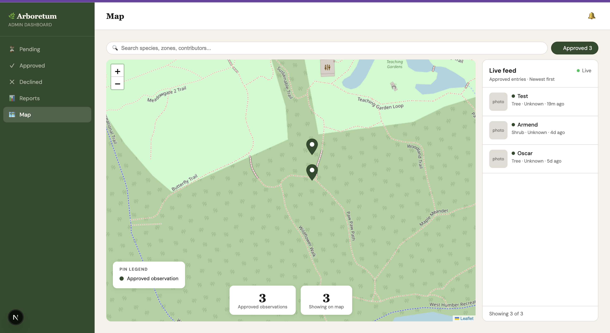
Why
Designing a dashboard for ecological and tree data was completely new territory for me. I had never done anything like it before and with time constraints I needed a starting point fast.
How
I used Claude as a design tool to help me get there. I gave it a proper brief, what the platform does, who the primary user is, and that it needed to work beyond just the Humber Arboretum. I also attached the Terra brand references so the output would stay inside the visual system we had already established rather than drift into something generic. From there Claude asked me a set of clarifying questions about scope, flows, density and fidelity. I narrowed it down to the desktop dashboard only, focusing on the map overlay, the review queue and the species inventory.
What
What came out was a full design canvas with five screens but I focused on one specifically, the map overlay screen. I used that as my reference and starting point for my further iterations. It gave me enough to work from to start coding the dashboard UI for the team in TypeScript and build from there.
So What
Using AI as a design tool this way was not about shortcuts. It was about getting a strong enough starting point to move fast and contribute something real. I had zero experience designing a dashboard for this kind of data. Having that starting point meant I could focus on refining and building rather than starting from a blank page with no idea where to go. I also just wanted to see what it would produce and honestly, to check if my job just got replaced. It still needed a lot of fine tuning so I feel safe for now. But it was not bad at all for the short brief I gave it and I think it is probably already being used by a lot of designers whether they admit it or not.
Week 5
Deliverables
- Tech Stack
Why
In week 2 the team needed to decide what we were actually going to build with before anyone wrote a single line of code. I had never heard of any of the technologies we ended up choosing before this module so this was a learning moment for me from the start.
How
The team discussed the options together and the developers took the lead since they had the knowledge to evaluate what made sense technically. I listened, asked questions, and made sure I understood at least the basics of why each choice was made.
What
We landed on the following stack:
- Next.js — the main framework for building both the Field App and the Staff Dashboard. A framework is basically a pre-built set of tools that makes building web apps faster and more structured so the team could focus on the actual product.
- TypeScript — a version of JavaScript that adds rules around how code is written, making the codebase easier to maintain across the whole team.
- Supabase — handles the database, authentication, file storage and real-time data. The alternative was setting up PostgreSQL directly but Supabase wraps PostgreSQL and adds everything on top so you get it all in one place. The SQL functions were a big factor and the UI is straightforward enough to manage without a dedicated database expert.
- Expo Go — used for developing and testing the mobile app on real devices. The alternative was React Native CLI which is much more complex, or building fully native apps in Swift and Kotlin which would have meant two separate codebases. Expo Go gave the team a real mobile app without the painful setup.
- OSM (OpenStreetMap) — provides the actual map data. The alternative was Google Maps but that comes with a cost. OpenStreetMap is open source and free, which directly aligned with our Cost Efficiency quality attribute.
- Docker — makes sure every team member runs the exact same development environment on their own computer, avoiding the situation where something works on one machine but breaks on another.
So What
Looking at the stack now I can see how the choices connect back to the quality attributes we defined in week 1. Supabase supports our Scalability requirements, OpenStreetMap directly addresses Cost Efficiency, and Expo Go supports Compatibility since it works across devices. The decisions were not random, they tied back to what the team agreed mattered most from the start.
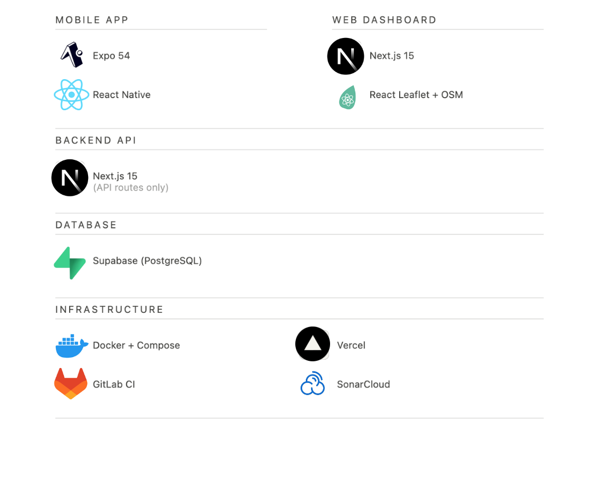
Week 2
Deliverables
- My Role
- Terra Design
- MVP Definition
- Software Architecture
My Role
Our team divided roles based on skills and background, which honestly made a lot of sense. Mine was Web dev Frontend and Artist.
It meant I was not working on the backend, and honestly that was probably for the best for everyone involved. Before any development started I completely redesigned the Terra app and brand from scratch based on the feedback we received after week 1. The colors, typography, logo, the full design system, that was mine to own and I made sure everything felt like one consistent product going forward.
From there I moved into actually building. I worked heavily on the Staff Dashboard, designing the UI and implementing features using TypeScript. I also worked on the mobile app screens, focusing on the visual layer, the layout, the components, and making sure everything felt modern and on brand.
I worked a lot with AI, Claude specifically, to help me write TypeScript for the dashboard. Claude Code helped a lot with this. What was important for me though was understanding the structure of what I was writing and not just copying and pasting. Since TypeScript is similar to JavaScript which I had only worked with once before, I still needed a lot of guidance. But having that support was great because I really wanted to contribute somewhere beyond just designing. And I did.
My contribution looked different from my teammates because I was not setting up databases or writing backend logic. But the product would not look or feel the way it does without the design and frontend work I put in.
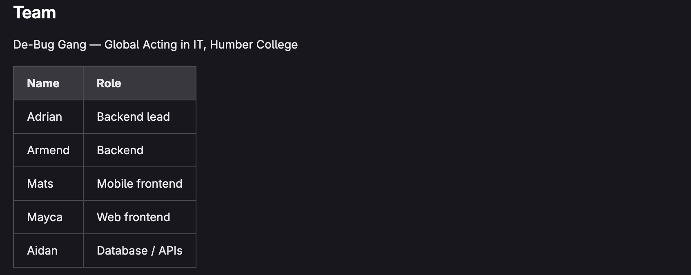
Why
I made the decision early on to create a separate brand identity rather than tying everything to the Humber Arboretum. The reasoning was simple. If the Humber Office of Sustainability ever wanted to expand the platform to other green spaces in the future, the branding should not limit them to one location. This also came from feedback we received in the previous module. Our teachers pointed out that the app lacked visual cohesion, different screens felt disconnected, like they were not part of the same product. That pushed me to take ownership of the brand and make sure everything from this point forward felt like one consistent system.
How
The name Terra came to me naturally. In Papiamentu, my native language from Aruba, "tera" means ground, and it also means earth in Latin. That felt like more than a coincidence. It captured exactly what the platform is about, monitoring the land, understanding what is growing on it, and protecting it. The colours had already been taking shape since our early prototypes, so the direction was already there. All I had left to do was lock in the hex codes. Forest green as the primary, cream as the background, mint as an accent, and near black for text. Once they were set, I committed to them fully.
What
The result was a full design system covering colours, typography, components, and map pins, so that anyone on the team building a screen would be working from the same foundation. Georgia handles the logo wordmark and headings, giving Terra an editorial, grounded quality. DM Sans keeps the UI clean and readable. The leaf icon is simple enough to work at any size but detailed enough to carry meaning. The veins reference the way ecological data flows through the platform, from individual field observations up to the full landscape picture.
So What
Terra is not just a name or a logo. It is the thing that holds the whole platform together visually. Having a clear brand identity meant the team had something to build towards, and it meant the product finally felt like one thing instead of a collection of screens.
This is the new prototype with the new design
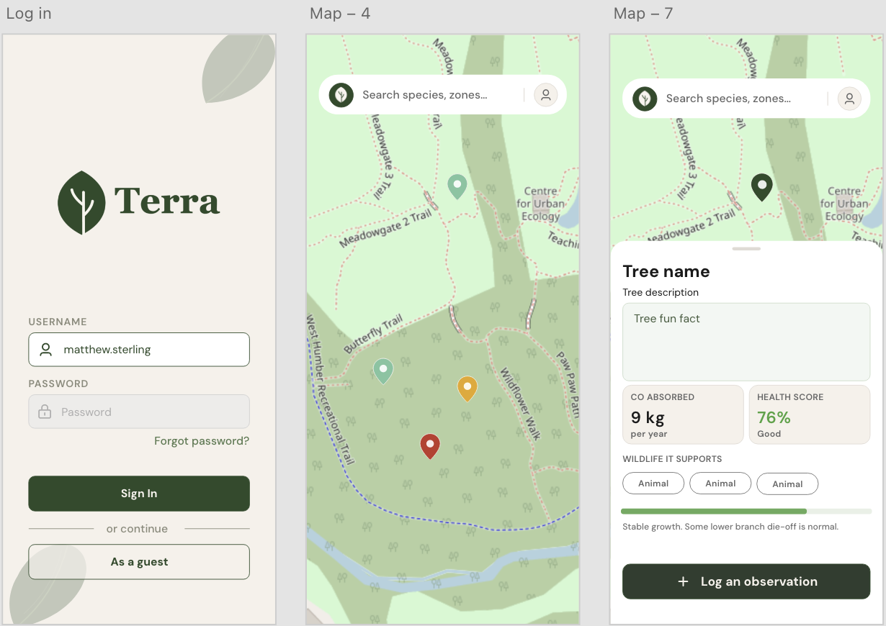
Why
As a team we needed to get aligned on what we were actually building before anyone started doing anything. As a group we have the tendency to want to build everything at once and lose the plot, so having a clear MVP definition was as much about keeping the team in scope as it was about having a plan. For me personally it also meant I knew exactly which screens to prototype and did not waste time designing things that were not getting built yet.
How
We defined the MVP together as a team. I made sure to write it down and document it properly so we all had something concrete to refer back to. The core idea was simple, build the smallest version of the platform that proves the main loop works. A visitor logs an observation in the field and that data ends up in a system that staff can act on.
What
We ended up with two MVPs that work together as one system:
- Field App MVP — a mobile web app for visitors to log in, explore the map, view tree info, and submit observations. It covers 6 screens: Login, Map, Tree Detail, Camera, Add Entry Form, and Confirmation.
- Staff Dashboard MVP — a web dashboard for sustainability staff to see the landscape inventory and review visitor submissions. It covers 4 screens: Login, Dashboard Map, Element Detail Panel, and Observation Review.
Everything else, native apps, offline maps, AI models, ESG reports, went into the out of scope column. If it was not in the left column it did not get built yet.
So What
Having this written down saved us a lot of time and probably a lot of arguments. It gave me a clear design brief and gave the team a shared reference point to come back to whenever things started creeping out of scope.
Why
Before the team could start building, we needed a clear and documented picture of how the whole system fits together. Adrian took the lead on this as our backend lead with a software engineering background.
How
Adrian created the C4 architecture diagrams plus a UML data model. I went through them and asked questions to understand what each one was showing. It was not my work but I wanted to make sure I understood what I was building the frontend on top of.
What
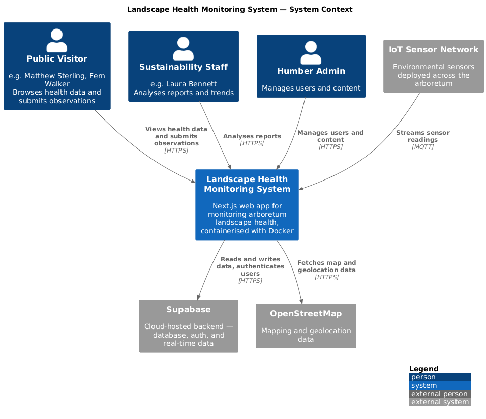
The big picture. Shows who uses the system and what it connects to. Our three user types, Public Visitor, Sustainability Staff and Humber Admin, all interact with the platform. IoT sensors stream data in and the system connects to Supabase and OpenStreetMap.
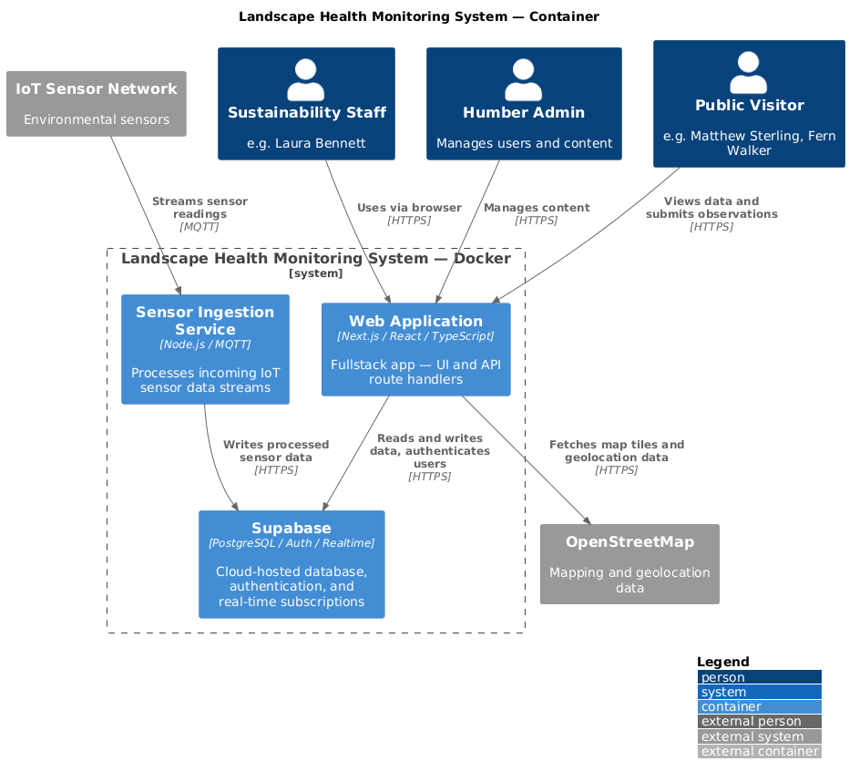
One level deeper. Shows what the system is made of. Everything runs inside Docker. Inside you have the Web Application in Next.js and a Sensor Ingestion Service for IoT data. Both connect to Supabase and OpenStreetMap.
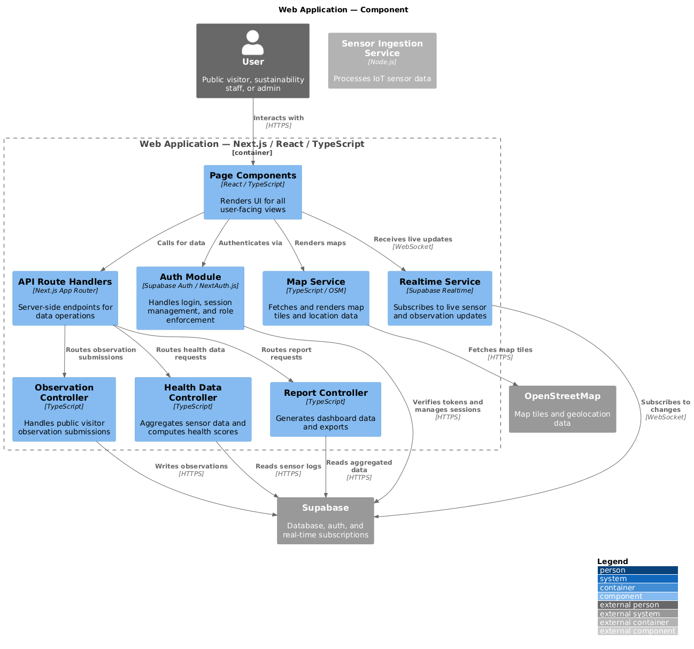
Even deeper. Shows what is inside the Web Application. Page Components, Auth Module, Map Service, API Route Handlers and controllers for observations and health data. This is where my frontend work sits.
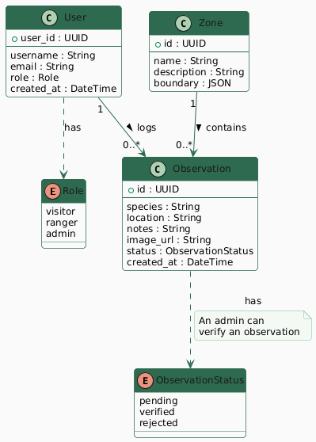
Shows how the data is structured. A User can log many Observations. Each Observation belongs to a Zone and has a status of pending, verified or rejected. Users are the people using the platform. Entries are the observations they submit.
So What
As someone who had never seen diagrams like this before and does not have a background in software, this was new to me like many things in this module. But having it documented this way actually made it easier to understand. I can see the full picture of how the system works, where the data comes from, where it goes, and where my frontend work fits inside all of it. It helped me understand my place in the project.